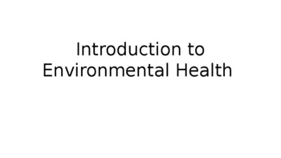
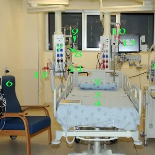
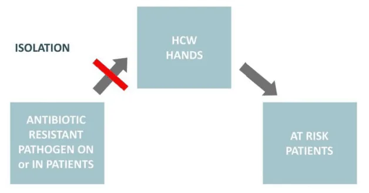
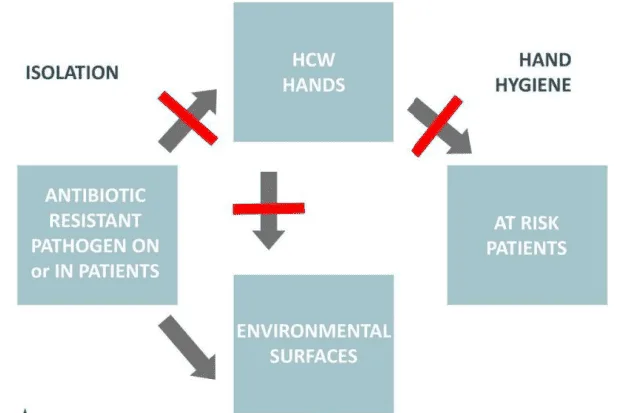

Expanded Nursing Uganda Explanation
Introduction to environmental hygiene/sanitation should be understood beyond a short definition. Link the concept to patient history, focused assessment, common risks, nursing priorities, documentation and evaluation of outcomes.
Contents, 14 sections (tap to expand)
01 Objectives
This module will provide the knowledge necessary to:
- Explain why there is a need to maintain a clean environment to prevent the spread of infections.
- Discuss cleaning and disinfection requirements for clinical settings like ambulatory surgery centers.
- Utilize a set of tools designed to assure environmental hygiene quality .
02 Definition of Terms
Understanding the distinction between environmental hygiene and sanitation is crucial for public health.
- Environmental Hygiene: This refers to the control of all factors in our physical surroundings that can have a harmful effect on human health and development. It's about maintaining a clean and safe environment to prevent disease.
- Sanitation: This specifically refers to the principles and practices related to the safe collection, treatment, and disposal of human excreta and other liquid and solid wastes . Proper sanitation is a cornerstone of environmental hygiene and is critical for preventing the spread of many communicable diseases.
03 The Environment in Relation to Health
The environment is the aggregate of all external conditions that influence the life and development of an organism. It is a key component of the Epidemiological Triad, alongside the host and the agent. The environment can be broken down into three main categories:
- 1. The Physical Environment: This includes all non-living (inanimate) things and physical forces. A healthy physical environment is essential for preventing disease. Key components include: Safe Water Supply: Free from pathogens and harmful chemicals.
- Clean Air: Unpolluted by smoke, dust, or industrial fumes.
- Safe Housing: Structurally sound, uncrowded, and protected from the elements.
- Waste Disposal: Proper management of refuse and sewage.
- Climate and Geography: Temperature, humidity, and terrain can influence the types of diseases prevalent in an area.
- 2. The Biological Environment: This includes all living things that surround us, apart from humans themselves. The biological environment comprises: Flora (Plants): Can provide food and medicine but can also include poisonous plants or produce pollen that causes allergies.
- Fauna (Animals): Includes insects, rodents, and other animals that can act as vectors (transmitting diseases, like mosquitoes carrying malaria) or reservoirs (hosting infectious agents).
- Microorganisms: The world of bacteria, viruses, fungi, and protozoa, many of which are pathogenic.
- 3. The Social (or Socio-cultural) Environment: This encompasses the societal and cultural factors that influence health and behavior. It includes: Cultural Beliefs, Customs, and Habits: Practices related to food preparation, personal hygiene, and seeking healthcare can significantly impact health.
- Socioeconomic Status: Poverty, education level, and employment affect access to resources like nutritious food, good housing, and healthcare.
- Laws and Governance: Government policies on sanitation, water quality, and healthcare infrastructure are critical for public health.
- Social Networks and Support Systems: The community and family structure can provide support that enhances health and well-being.
04 The Importance of Environmental Hygiene and Sanitation
Maintaining a clean and safe environment is not just about aesthetics; it is a fundamental pillar of public health. A nurse must be able to present a desired attitude regarding its importance because:
- It Prevents Disease: Proper sanitation breaks the chain of infection for many diseases like cholera, typhoid, and dysentery by preventing fecal-oral transmission.
- It Controls Vectors: A clean environment with proper waste management reduces breeding grounds for disease-carrying vectors like mosquitoes, flies, and rats.
- It Promotes Physical Well-being: Access to clean air, safe water, and adequate housing contributes directly to physical health and reduces respiratory and gastrointestinal illnesses.
- It Enhances Mental and Social Well-being: Living in a clean, organized, and safe community contributes to a sense of pride, security, and overall mental wellness.
- It Reduces Healthcare Costs: By preventing diseases, good environmental hygiene reduces the burden on the healthcare system, saving resources and costs for both individuals and the government.
05 The Problem: The Contaminated Environment
The healthcare environment is a major reservoir for pathogens. Without rigorous cleaning, surfaces can harbor and transmit dangerous microorganisms, contributing to Healthcare-Associated Infections (HAIs).
06 How long do pathogens survive?
Studies show that significant pathogens can survive on dry, inanimate surfaces for extended periods, posing an ongoing risk to patients and staff.
- Bacterium Duration of Survival
- Methicillin-resistant S. aureus (MRSA) 7 days to 7 months
- Vancomycin-resistant Enterococcus (VRE) 5 days to 4 months
- C. difficile spores 5 months
Source: Matlow, A. G. et al. CMAJ 2009;180:1021-1024
07 Where are the pathogens?
Pathogens are found on virtually all surfaces in a patient's room, especially high-touch surfaces .
- Surface VRE MRSA C. difficile
- Bed Rails ++++++ + +++
- Bed Table ++++++ +
- Door Knobs ++ ++ +
- Doors +++ +
- Call Button +++ + ++
- Chair ++ + ++
- Tray Table +++ ++
- Toilet Surface + ++++
- Sink Surface + + +++
- Bedpan Cleaner +
Source: Phillip Carling, MD, Boston University School of Medicine
08 The Role of the Environment in Transmission
The environment is a critical link in the chain of infection. Traditional infection control has focused on isolation and hand hygiene, but without addressing the environment, a key pathway for transmission remains.
- The Traditional Model: An antibiotic-resistant pathogen on or in a patient can be transferred to an at-risk patient via the hands of a Healthcare Worker (HCW).
- Intervention 1: Isolation. Isolation procedures aim to break the link between the pathogen source and the HCW's hands.
- Intervention 2: Hand Hygiene. Proper hand washing aims to break the link between the HCW's hands and the at-risk patient.
- The Missing Link: Environmental Surfaces. Pathogens from the patient contaminate environmental surfaces. These surfaces then contaminate the HCW's hands, which can then transmit the pathogen to another patient. The environment acts as a persistent reservoir.
- Intervention 3: Disinfection & Cleaning. Proper environmental cleaning breaks the link between the contaminated surfaces and the HCW/patient, completing the prevention strategy.
Conclusion: A clean and healthful environment, achieved through effective cleaning and disinfection, is a critical and non-negotiable aspect of patient care, just as important as hand hygiene and isolation.
09 Principles of Effective Cleaning and Disinfection
- EPA-Registered Disinfectant: Use disinfectants registered by the Environmental Protection Agency (EPA). These products have been tested for efficacy against specific pathogens. The product label will contain the EPA registration number.
- Contact/Dwell Time: Disinfectant kills while it is drying. The surface must be thoroughly wet and allowed to remain wet for the time listed on the product label. Staff must be able to state this required "dry time."
- Frictional Cleaning: Cleaning requires the use of friction ("elbow grease") to physically remove organic material and microorganisms from surfaces. Simply wetting a surface is insufficient.
- Do Not Re-dip: Used cloths should not be re-dipped into cleaning solutions, as this contaminates the entire bucket of solution.
- Appropriate Tools: Microfiber mops have demonstrated superior microbial removal compared to cotton string mops. Mop heads and cleaning solutions must be changed frequently, at a minimum when visibly soiled and after each procedure.
- Dust Control: Use damp mopping or chemically treated mops to reduce airborne dust. HEPA-filtered vacuums should be used in patient care areas, and vacuuming should not be done when procedures are in progress.
10 Monitoring Environmental Hygiene Quality
Evaluating the effectiveness of cleaning practices is a key CDC guideline. This cannot be left to chance.
- High-Touch Surfaces: Cleaning efforts and monitoring should focus on high-touch surfaces in close proximity to the patient (e.g., bed rails, light switches, call buttons, doorknobs, keyboards).
- Monitoring Tools: Objective tools can be used to evaluate the quality of cleaning. These include: Fluorescent Gel/Markers: An invisible marker is placed on a high-touch surface before cleaning. After cleaning, a UV light is used to see if the mark was removed.
- ATP (Adenosine Triphosphate) Systems: Measures for ATP, a molecule present in all living cells, providing a rapid quantitative measure of cleanliness.
- Swab Cultures: Culturing a surface to identify if specific pathogens are present after cleaning.
- Feedback and Improvement: Studies show that cleaning practices significantly improve after staff education, performance feedback, and repeated measurement (remeasure). These activities should be part of a facility's Quality Assurance Performance Improvement (QAPI) program.
- What is the main difference between the terms "environmental hygiene" and "sanitation" ?
- List the three main components of the environment (physical, biological, social) and give two examples for each.
- Why is it important for a nurse to have a positive and proactive attitude towards environmental hygiene? List three reasons.
- How does the physical environment directly impact a person's health? Provide one positive and one negative example.
- Why is the environment considered a critical "missing link" in infection prevention, alongside hand hygiene and isolation?
- According to studies, for how long can MRSA and C. difficile spores survive on dry surfaces?
- Name five high-touch surfaces in a patient room that require diligent cleaning.
- What is "dwell time" and why is it important for effective disinfection?
- Describe one method for monitoring the quality of environmental cleaning.
11 Nursing Uganda Clinical Lens
Use Introduction to environmental hygiene/sanitation as a practical nursing topic, not only a memorized definition. Combine safety, therapeutic communication, mental status assessment and dignity.
- What to understand first: define introduction to environmental hygiene/sanitation, identify the normal or expected pattern, then explain what changes when the patient is unwell.
- Why it matters in care: the nurse must recognize risk early, explain findings clearly, document accurately and know when to escalate.
- How to revise it: connect each point to assessment, nursing diagnosis or care problem, intervention, rationale and evaluation.
12 Assessment Guide
- Appearance, behaviour, speech, mood, thought process, perception, cognition and insight.
- Risk of self-harm, harm to others, neglect, withdrawal, substance use or relapse.
- Support systems, medication adherence, sleep, appetite and triggers.
13 Nursing Priorities, Rationales and Outcomes
- Maintain safety using the least restrictive approach possible.
- Use calm communication, active listening and non-judgmental observation.
- Support adherence, coping skills, family involvement and follow-up.
The rationale for these priorities is patient safety: nursing actions should prevent deterioration, reduce discomfort, support recovery and create clear evidence for the next caregiver.
- Expected outcome: Risk reduces, the patient engages with care, symptoms are monitored and a realistic safety or relapse plan is in place.
14 Patient Teaching and Revision Check
- Explain introduction to environmental hygiene/sanitation in simple language the patient or caregiver can repeat back.
- Teach warning signs, medicine or follow-up instructions, hygiene or lifestyle points where relevant.
- For exams, prepare a short answer using: definition, causes or risk factors, signs, assessment, management, complications and prevention.
- For ward practice, document baseline findings, actions taken, patient response and the plan for review.
Illustrations and Diagrams (5)




Related Video Lectures
Watch nursing lecture videos on YouTube for this topic. Opens in a new tab.
Watch on YouTubeExternal link: YouTube may use its own cookies and terms. Nursing Uganda is not affiliated with YouTube.